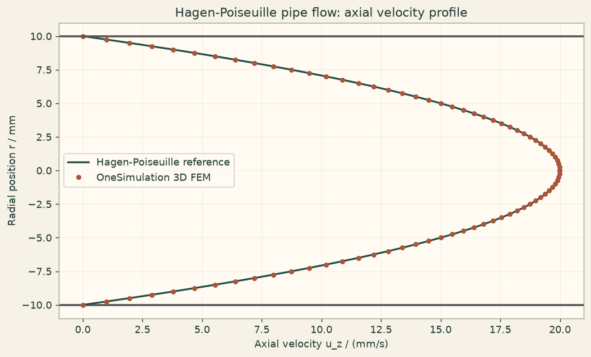

Docs › Examples › Hagen-Poiseuille pipe flow
Fluid flow · 3D
Hagen-Poiseuille pipe flow
Pressure-driven laminar flow in a round pipe, graded against the parabolic profile.

What it computes
OneSimulation solves the steady incompressible Navier-Stokes equations in a cylinder with a mixed Taylor-Hood element.
What it checks
The radial profile u(r)=G/(4 mu)(R^2-r^2) and the flow rate Q=pi G R^4/(8 mu) match within about 0.1 %.
The notebook
The complete notebook, cell by cell. Run it to produce the figures and the comparison printout.
An incompressible Newtonian fluid fills a straight circular pipe of radius \(R\) aligned with the \(z\) axis. A constant streamwise body force \(G\) (per unit volume, equivalent to a constant pressure gradient \(-\partial p/\partial z = G\)) drives the flow. Once the flow is fully developed it depends only on the radial coordinate \(r=\sqrt{x^2+y^2}\), and the steady incompressible Navier-Stokes equations reduce to
OneSimulation solves the full 3D stationary Navier-Stokes system \(\rho(u\cdot\nabla)u=-\nabla p+\mu\nabla^2 u+f\) with inf-sup stable Taylor-Hood finite elements (quadratic velocity, linear pressure) and a Newton solver. The curved pipe wall is resolved with quadratic (isoparametric) tetrahedra.
Reference. Integrating the radial balance gives the Hagen-Poiseuille results
We check the computed radial profile and the volumetric flow rate against these.
from importlib.metadata import version
import numpy as np
import matplotlib.pyplot as plt
from onesim.cad.d3 import Cylinder
from onesim.materials import NewtonianFluid
from onesim.meshing import TetrahedralMesher
from onesim.numerics import Numerics
from onesim.numerics.fem import FiniteElement, TaylorHood
from onesim.numerics.linear import SparseDirect
from onesim.numerics.nonlinear import Newton
from onesim.physics.hydrodynamics import FixedVelocity, IncompressibleNavierStokes, NoSlipWall
from onesim.simulation import Problem, Simulation
from onesim.simulation.field_constraints import MeanValue
from onesim.simulation.initial_conditions.values import InitialValue
print("OneSimulation:", version("onesimulation"))Parameters
The pipe axis lies along \(z\) (the Cylinder default axis). The flow is fully developed, so the solution is independent of \(z\). The body force sets the flow rate; the density is a unit value, which keeps the flow in the creeping regime where the parabolic profile is the exact Navier-Stokes solution.
radius = 0.010 # m, pipe radius R
length = 0.040 # m, pipe length along the axis (z)
mu = 1.0e-3 # Pa·s, dynamic viscosity
rho = 1.0 # kg/m^3, density (unit value: the inertial term vanishes here)
body_force = 0.8 # Pa/m = N/m^3, constant streamwise forcing G
u_max_reference = body_force * radius**2 / (4.0 * mu)
flow_rate_reference = np.pi * body_force * radius**4 / (8.0 * mu)
u_mean_reference = 0.5 * u_max_reference
reynolds = rho * u_mean_reference * (2.0 * radius) / mu
print(f"G = {body_force:.3f} N/m^3, u_max = {u_max_reference:.4f} m/s, Re = {reynolds:.2f} (laminar)")
print(f"Reference flow rate Q = {flow_rate_reference:.4e} m^3/s")Model
The circular wall (outer_wall) is a no-slip wall; the inlet (bottom, z=0) and outlet (top, z=L) carry the fully developed parabolic axial trace, so every one of the three boundary faces has an explicit condition. Prescribing the same developed profile at inlet and outlet makes the net volume flux vanish, as incompressibility in a closed domain requires.
geometry = Cylinder(radius=radius, length=length)
mesh = TetrahedralMesher(target_size=0.0024, geometry_order=2).generate(geometry)
print("Mesh:", mesh.cell_count, "quadratic tetrahedra")
fluid = NewtonianFluid(density=rho, dynamic_viscosity=mu)
def forcing(x):
# Constant axial body force (per unit volume); x only fixes the array shape.
zeros = np.zeros_like(x)
return np.column_stack((zeros, zeros, np.full_like(x, body_force)))
def developed_profile(x, y):
# Fully developed Hagen-Poiseuille trace: axial velocity u_z(r), zero in-plane.
u_axial = body_force / (4.0 * mu) * (radius**2 - (x**2 + y**2))
zeros = np.zeros_like(x)
return np.column_stack((zeros, zeros, u_axial))
model = IncompressibleNavierStokes(domain=geometry.volume, material=fluid, body_force=forcing)
problem = Problem(
name="Hagen-Poiseuille pipe flow",
geometry=geometry,
physics=(model,),
boundary_conditions=(
NoSlipWall(boundary=geometry.boundaries.outer_wall, physics=model),
FixedVelocity(boundary=geometry.boundaries.bottom, physics=model, value=developed_profile),
FixedVelocity(boundary=geometry.boundaries.top, physics=model, value=developed_profile),
),
constraints=(MeanValue(model.pressure, 0.0),),
initial_conditions=(InitialValue(model.velocity, (0.0, 0.0, 0.0)),),
)
simulation = Simulation(
problem=problem,
mesh=mesh,
numerics=Numerics(
spatial=FiniteElement(element=TaylorHood()),
nonlinear_solver=Newton(
linear_solver=SparseDirect(), absolute_tolerance=1e-11, relative_tolerance=0.0,
),
initial_guess={model.velocity: (0.0, 0.0, 0.0)},
),
)
result = simulation.solve_stationary()Comparison with the Hagen-Poiseuille profile
We sample the axial velocity along a radial line at mid-length and compare with the closed-form parabola. The volumetric flow rate follows from the surface integral \(Q=\int_0^R u_z(r)\,2\pi r\,dr\), evaluated here on the sampled profile.
r_samples = np.linspace(0.0, radius, 41)
line = np.column_stack((r_samples, np.zeros_like(r_samples),
np.full_like(r_samples, length / 2.0)))
u_numeric = np.asarray(result.field(model.velocity).evaluate(line))[:, 2]
u_exact = body_force / (4.0 * mu) * (radius**2 - r_samples**2)
max_abs_error = float(np.max(np.abs(u_numeric - u_exact)))
rel_error = max_abs_error / u_max_reference
u_max_numeric = float(np.max(u_numeric))
flow_rate_numeric = float(2.0 * np.pi * np.trapezoid(u_numeric * r_samples, r_samples))
flow_rate_rel_error = abs(flow_rate_numeric - flow_rate_reference) / flow_rate_reference
print(f"Centreline velocity: FEM {u_max_numeric:.5f} m/s, reference {u_max_reference:.5f} m/s")
print(f"Maximum absolute profile error: {max_abs_error:.3e} m/s ({100*rel_error:.2f} % of u_max)")
print(f"Volumetric flow rate: FEM {flow_rate_numeric:.4e} m^3/s, reference {flow_rate_reference:.4e} m^3/s")
print(f"Flow-rate error: {100*flow_rate_rel_error:.2f} %")
assert np.all(u_numeric >= -1e-3 * u_max_reference), "Flow must move in the forcing direction."
assert rel_error < 0.01, "Radial profile deviates more than the example tolerance (1% of u_max)."
assert abs(u_max_numeric - u_max_reference) / u_max_reference < 0.01, "Centreline velocity off."
assert flow_rate_rel_error < 0.01, "Volumetric flow rate off by more than 1%."Figure
cream = "#fbf5eb"
fig, ax = plt.subplots(figsize=(8, 4.8), constrained_layout=True)
fig.patch.set_facecolor(cream)
ax.set_facecolor("#fffaf2")
ax.grid(alpha=0.25)
ax.plot(u_exact * 1000, r_samples * 1000, color="#214D43", lw=1.8, label="Hagen-Poiseuille reference")
ax.plot(u_numeric * 1000, r_samples * 1000, "o", color="#A85539", ms=4, label="OneSimulation 3D FEM")
ax.axhline(radius * 1000, color="#555", lw=2)
ax.axhline(-radius * 1000, color="#555", lw=2)
ax.plot(u_exact * 1000, -r_samples * 1000, color="#214D43", lw=1.8)
ax.plot(u_numeric * 1000, -r_samples * 1000, "o", color="#A85539", ms=4)
ax.set(xlabel="Axial velocity u_z / (mm/s)", ylabel="Radial position r / mm",
title="Hagen-Poiseuille pipe flow: axial velocity profile")
ax.legend()
plt.show()Going further
Replace the constant body force with an explicit pressure difference between the inlet and outlet faces (a traction boundary condition) and recover the same parabola. Increase the forcing until the Reynolds number leaves the creeping regime; the fully developed profile stays parabolic, but entrance effects would appear near the inlet of a longer pipe fed by a uniform stream. Refine the mesh or raise the element order and watch the profile and flow-rate errors shrink as the curved wall is resolved more accurately.